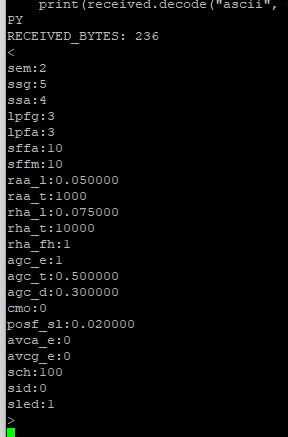
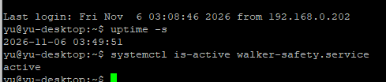
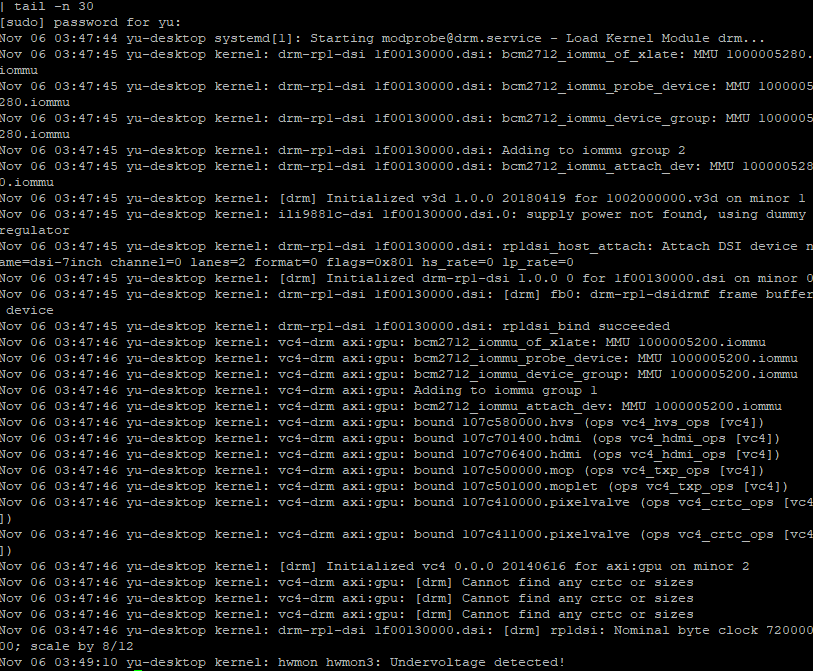

보행기 실기 통합 트러블슈팅 기록 · 2026-11-06
기록 기준: 2026-11-06, 한국 시간. 사용자 실행 화면·실기 확인과 코드 검증을 구분해 정리했다. 이전 26개 사례에 이어 TS-27~44의 후속 18개 사례를 기록한다. 접고 펼치는 HTML과 최신 진행 현황을 함께 제공한다.
현재 결론: GPS·IMU 개별 수신과 기존 웹훅의 문자·실제 GPS 지도 수신을 확인했다. Pi 안전서비스는 등록 후 재부팅에서도 active였다. 검은 화면은 같은 전원에서 USB 장치를 제거하고 켠 뒤 복구됐으며, 사용자 요청에 따라 전원 문제 해결은 보류한다. USB를 다시 모두 연결한 상태의 안정성과 전체 무인 기동을 완료로 표시하지 않는다.
확인 수준: 실기 확인은 사용자 화면·보고, 코드 검증은 로컬/모의 테스트 및 GitHub 검사, 미확인은 아직 장치에서 증명하지 않은 항목이다. 명령은 해당 사례의 재현·확인용이며 문서 전체를 순서 없이 실행하지 않는다. 비밀값과 실제 정밀 좌표는 이 문서에 싣지 않았다.
1. 현재 상태와 확인 경계
- 실기 확인: Pi·Jetson 유선 직결과 양쪽 점군, Jetson 자동 시작 및 랜선 재연결 복구.
- 실기 확인: Pi GPS 고정 포트/NMEA/DGPS 위치, IMU V6 송신기의 수신·움직임·측정 범위·설정 유지·USB 재연결 복구.
- 실기 확인: GUI 지도 수정 후 동작 보고, 기존 웹훅의 비사고 문자와 실제 Pi GPS 지도 이미지 수신.
- 실기 확인: Pi 안전서비스 enabled/active 및 재부팅 뒤 active. 화면 부팅은 조건부 복구이며, 최근 USB 제거 뒤 센서 재연결 상태는 미확인이다.
- 보류·미완료: 전원/디스플레이 원인 해결, 전 장치 연결 상태의 반복 전원 기동, 실제 GUI SOS 전달, 최종 장착각 보정, 실제 사고 감지 성능, 장시간 운용.
서비스 active는 프로세스 기동의 증거다. 모든 센서의 유효성, 실제 보호자 수신, 물리 화면 표시를 대신 증명하지 않는다. DGPS와 HDOP도 외부 위치 오차 측정이나 RTK 고정 검증을 뜻하지 않는다.
2. 실제 적용한 장치 구성
네트워크와 실행 위치
- Jetson: 사용자 walker, 저장소
/home/walker/capstone, ROS Humble, vendor/home/walker/d2_ws, 실제 실행 패키지/home/walker/walker_bridge_ws. - Pi: 사용자 yu, 저장소
/home/yu/capstone, 실행 폴더/home/yu/capstone/capstone_code, Python/opt/walker/venv/bin/python. - 전용 유선망: Jetson enP8p1s0=
192.168.10.1/24, Pi eth0=192.168.10.2/24, NetworkManager 프로필 walker-direct. 게이트웨이·DNS 없이 never-default로 구성했고 인터넷 기본 경로는 Wi-Fi에 유지했다. - 전송 경로: 거리 UDP 9100, 안전감시→GUI 상태 UDP 9101, GUI→안전감시 명령 UDP 9102, 별도 3D 표시 UDP 9103.
- 자동 실행: Jetson walker-lidar.service, Pi walker-safety.service, Pi GUI는 로그인 세션의 walker-ui.desktop 및 start-pi-ui.sh.
Wi-Fi의 과거 주소 192.168.0.173/192.168.0.191을 최종 유선 목적지로 다시 적용하지 않는다. 실제 실행 경로와 OS 설정은 Git pull과 별개다. Jetson의 ROS 패키지 복사·빌드·재시작도 별도 단계다.
Pi 로컬 설정의 확인 항목
아래는 장치의 설정값을 설명한 것이며 새 파일 전체를 덮어쓰는 예제가 아니다. 기존 다른 설정을 유지한다.
UDP_PREVIEW_BIND = "192.168.10.2"
LIDAR_SOURCE = "udp"
GPS_PORT = "/dev/walker_gps"
GPS_BAUD = 115200
IMU_PORT = "/dev/walker_imu"
IMU_BAUD = 921600
IMU_PROTOCOL = "wireless"
IMU_CHANNEL = 100
IMU_SENSOR_ID = 0
IMU_CONFIGURE_ON_CONNECT = False무선 IMU의 출력 설정 명령은 보내지 않고 현재 9개 숫자 형식을 검사한다. config_local.py와 /etc/walker/secrets.env는 Git에 넣지 않는다. 명칭의 숫자나 USB tty 번호만으로 실제 하드웨어 모델을 확정하지 않는다.
3. 증상별 트러블슈팅
TS-27. Wi-Fi 주소 의존에서 전용 랜선 고정 IP로 전환
증상: 초기 UDP 전송 대상이 Pi Wi-Fi 주소여서 다른 네트워크나 Wi-Fi 부재 시의 운용 구성이 필요했다.
조치: 실제 랜포트와 SSH 경로·대역 충돌을 조회한 뒤 양쪽에 walker-direct 프로필을 만들었다. Jetson은 192.168.10.1, Pi는 192.168.10.2로 설정하고 자동 연결 우선순위100, never-default를 사용했다. Pi의 수신 바인드와 Jetson pi_host를 192.168.10.2로 맞췄다.
확인: Pi 주소/라우팅, Jetson의 ip route get 192.168.10.2, ping 응답 및 실제 양쪽 점군 표시를 확인했다. 사용자는 랜선 분리 후 자동 복귀도 확인했다.
경계: 인터넷이 없는 상태의 전체 냉간 기동과 장시간 시험은 별도다. ping만으로 센서 통신을 완료로 판정하지 않는다. 이전 문서의 '유선 전환 미확인'은 당시 기록이며 현재 단계에서는 위 실기 결과로 갱신한다.
TS-28. GUI 자동 시작 설치가 기존 서비스 부재로 중단됨
증상: 신설 Pi에서 GUI 전용 설치가 파일을 쓴 뒤 systemctl list-unit-files walker-ui.service --no-legend의 종료 코드1로 중단됐다. && sudo reboot도 실행되지 않았다.
원인: 조회 대상인 이전 walker-ui.service가 없는 정상적인 경우를 설치 실패로 처리했다.
조치: 전체 유닛 목록을 조회하고 정확한 이름을 비교하도록 변경했다. 실제 systemctl 오류는 숨기지 않았다. 전체 안전감시가 아직 준비되지 않았던 단계에는 --gui-only로 GUI만 등록했다.
확인: 없는 서비스/있는 서비스/실제 조회 오류 회귀 검사를 통과했고 PR #4·#6에 반영했다. 이후 GUI 전용 자동 실행 파일이 생성됐다. 이번 후속 단계에서 안전서비스까지 별도로 등록한 결과는 TS-38에 기록한다.
TS-29. GPS는 수신되지만 실내에서 위치가 없거나 포트가 달라짐
증상: GPS는 /dev/ttyACM0, 내부 시리얼은 /dev/ttyAMA10으로 보였다. NMEA는 오지만 처음에는 좌표가 비어 있었다.
원인 구분: GGA quality0 및 RMC V는 위치 미확보다. 유효한 체크섬의 수신과 실제 위치 fix는 다른 조건이다. 사용자는 안테나가 연결돼 있고 실내 시험 중이라고 확인했다.
조치: u-blox USB ID1546:01a9를 확인하고 기존 udev 별칭 /dev/walker_gps를 사용했다. USB 포트 이동 후에도 별칭이 생성되는지 확인하고 GPS_PORT/GPS_BAUD를 로컬 설정에 저장했다.
확인: 115200bps에서 NMEA45개/체크섬 유효45개, 고정 이름을 통한 GPS_DATA_OK를 확인했다. 이후 GUI와 실제 지도 시험에서 DGPS, 위성12개, HDOP1.94와 위치 수신을 확인했다.
경계: HDOP1.94를 1.94m 오차로 해석하지 않는다. 실제 위치 오차와 RTK 고정 성능은 미검증이다. 같은 VID/PID의 GPS를 여러 개 쓸 때는 현재 단일 장치 규칙만으로 구분할 수 없다.
TS-30. IMU 수신기가 USB 목록에 없고 고정 별칭도 없음
증상: 처음에는 lsusb/serial 목록에 GPS만 보였고 /dev/walker_imu가 없었다. 분리·재연결 로그도 GPS였다.
조치: 실제 IMU USB 수신기를 연결한 뒤 장치 열거부터 다시 확인했다. 수신기 연결과 무선 송신기 전원은 각각 확인했다.
확인: 10c4:ea60 Silicon Labs CP2102N, 일련번호0001, ttyUSB0가 나타났으며 기존 udev 규칙으로 /dev/walker_imu -> ttyUSB0가 생성됐다.
경계: CP2102N은 USB-UART 식별정보다. 이것만으로 송신기 전체 모델명이나 모든 구형 수신기와의 호환성을 확정하지 않는다. 사용자는 기존 수신기와 V6로 교체한 송신기를 사용한다고 설명했다.
TS-31. V6 무선 IMU 원본은 오는데 배포 드라이버가 사용하지 못함
증상: 921600bps에서 100-0,0.10,0.29,-125.71,0.0,0.0,0.0,0.005,0.001,1.005 형태가 반복 수신됐다.
원인: 기존 main은 유선 숫자9개 형식을 처리했다. 무선 CH-ID 접두어가 포함되면 파싱을 거부했다. Windows COM 번호와 유선 115200 기본값을 그대로 적용하는 것도 현재 장치와 맞지 않았다.
조치: wired/wireless 선택, 채널100·센서ID0 필터, 정확한 필드 수·유한 값·완성된 줄 검사를 추가했다. 이미 출력이 맞는 V6 구성에는 IMU_CONFIGURE_ON_CONNECT=False로 설정 명령을 보내지 않았다. 기존 유선 기본 동작은 보존했다.
확인: 기존 코드의 프레임 거부를 재현하고 PR #7에 반영했다. Pi에서 /dev/walker_imu 921600 wireless, 설정 명령 비활성 및 IMU_DATA_OK를 확인했다. 실시간20초 동안 valid=True, 자세·각속도 변화와 정지 시 약1g 자체 진단을 확인했다.
경계: 정확한 전체 모델·펌웨어 표기를 완전히 식별한 것은 아니다. 이 시험은 수신/움직임 반응이며 실제 사고 감지 정확도 검증이 아니다.
TS-32. IMU 설정 조회가 '응답 없음'으로 표시되고 측정 범위가 불명확함
증상: 버전 조회는 응답했지만 첫 cfg 조회 스크립트가 응답 없음으로 표시했다.
원인·조치: 스크립트가 <…> 형태만 추출해 일반 텍스트 본문을 놓칠 수 있었다. 필터 없이 원본 응답을 출력하도록 바꾸고 조회 종료 문자인 >를 finally에서 보냈다. 설정을 변경하는 명령은 보내지 않았다.
확인: 236바이트 응답에서 ssa:4, ssg:5, sch:100, sid:0을 확인했다. V6 매뉴얼에 따라 가속도 ±16g, 자이로 ±2000dps다. 송신기 전원을 껐다 켠 뒤에도 네 값이 유지됐다.
경계: 정지 시1g만으로 최대 측정 범위를 확인했다고 판단하지 않는다. 센서는 아직 책상 시험 상태여서 최종 보행기 장착각 보정은 미실시다.
TS-33. IMU USB를 다시 연결해도 바로 정상으로 돌아오지 않음
증상: 분리 뒤 valid=False/연결 실패와 장치 경로 없음 로그가 이어졌다.
동작: 드라이버는 1초부터 재시도 대기 시간을 늘리고 최대30초로 제한한다. 따라서 물리적으로 연결한 직후에 매번 즉시 복귀하는 구조는 아니다.
확인: 사용자 화면에서4·8·16초 대기와 11~39s 실패 상태, 40s의 연결 성공/valid=True/정상 복귀를 확인했다.
경계: 실제 USB 재삽입 시점이 화면에 없으므로 복구 지연을30초로 측정했다고 적지 않는다. 복구 전에는 기존 샘플을 유효 데이터로 유지하지 않았다.
TS-34. '모니터 연결 끊김'과 외부 알림 시험 옵션의 의미 혼동
증상: 점군은 표시되는데 '모니터 연결 끊김'이 보이거나 GUI 재실행 후 지도/센서 값이 대기했다.
원인: GUI만 자동 시작하고 safety_monitor.py는 수동 실행했던 단계였다. 이 문구는 LCD 전원 상태가 아니라 안전감시 상태 UDP 미수신을 뜻한다. 새 지도는 유효한 GPS 위치를 받기 전까지 타일 요청을 시작하지 않는다.
조치: Jetson을 끈 책상 시험에서는 실제 IMU·GPS를 읽고 --lidar-source none을 사용했다. --no-alert는 부저/LED만 끄므로 PR #8의 --no-notify로 외부 전송·새 전송 대기 기록·기존 스풀 복원을 차단했다.
확인: Pi 초기화 완료, IMU/GPS 수신, GUI의 safety_monitor 연결됨 및 실제 IMU 값을 확인했다. 시험용 SOS 상태는 외부 전송 안 함으로 표시하도록 했다.
경계: 시험 프로세스는 서비스 자동 등록과 다르다. PuTTY 종료나 재부팅 뒤 수동 프로그램이 계속 실행된다고 가정하지 않는다.
TS-35. GPS 좌표는 정상인데 지도에 접근 차단 안내가 보임
증상: DGPS·좌표·위치 마커는 표시됐지만 배경이 OpenStreetMap 접근 차단 이미지였다.
원인 구분: 화면에서 지도 서버의 거부는 확인했다. Pi의 정확한 요청/응답 헤더와 거부 규칙을 직접 수집한 것은 아니다. 공식 라이브러리의 기본 공용 식별정보·주변 사전 요청 경로와 HTTP403 PNG를 정상 이미지처럼 표시하는 동작은 소스/모의 응답으로 확인했다.
조치: PR #9에서 앱 식별정보, 정식 HTTPS URL, HTTP 헤더 기반 SQLite 캐시·조건부 요청을 적용했다. 기본 사전 다운로드를 중단하고 지도 화면이 보이며 GPS 위치가 있을 때 표시 범위만 요청한다. 403/429 응답 이미지는 사용하지 않고 제한 안내와 대기 후 재시도를 적용했다. 저작자 표시를 유지했다.
확인: 개발 PC의 실제 세계 지도 타일1개가 정상 PNG로 응답했다. 실제 Tk 위젯은 모의 HTTP 타일을 렌더링했다. Pi 업데이트와 GUI 재실행 후 사용자가 정상 동작을 확인했다.
경계: 요청 방식을 고쳤다고 모든 네트워크/서버 차단이 영구 해제되는 것은 아니다. 지도 배경은 인터넷이 필요하다. 지도 타일의 대량 사전 다운로드나 오프라인 지도 제작 기능은 추가하지 않았다.
TS-36. 예전 Discord 연동이 있는데 봇 토큰을 다시 요구함
증상: 장치 설정은 EXTERNAL_ALERT_CONFIGURED=False였고 사용자는 기존 봇을 사용한다고 답했다. 이후 제공한 화면은 Discord 웹훅 설정이었다.
구분·조치: 웹훅 표시 이름에 '봇'이 들어가더라도 봇 토큰 방식과 다르다. 기존 웹훅을 재생성하지 않고 URL을 로컬 숨김 입력받아 기존 웹훅 전송 경로를 사용했다. 채팅에 URL을 요구하지 않았다.
확인: 사용자가 [연결 시험] 보행기 Discord 신고 연결 확인 — 실제 사고가 아닙니다. 문구의 실제 채널 수신을 확인했다.
경계: 이때 입력은 프로세스 메모리에만 있어 다음 실행에 자동 적용되는 저장 설정이 아니었다. PR #10의 봇 토큰 숨김 입력 기능은 추가됐지만, 이번 실제 수신 경로는 기존 웹훅이다.
TS-37. 웹훅을 고정하고 실제 GPS 지도를 함께 보내기
요구: 실제 수신된 같은 웹훅을 저장하고 PC 추정 위치가 아닌 Pi GPS로 지도 이미지도 시험해야 했다.
조치: PR #11에서 root 전용 configure_webhook.py, /etc/walker/secrets.env 권한600 저장·보호 백업·다른 설정 보존을 준비했다. 시험 도구는 --secrets-file, --gps-location, --map-image로 저장 설정과 실제 GPS를 사용한다. GPS 포트를 공유하지 않도록 안전감시가 실행 중이면 시험을 중단한다.
확인: 사용자는 [GPS 지도 시험] 실제 사고가 아닙니다. 메시지, DGPS·위성12개·HDOP1.94, 수신 UTC/GPS UTC, 경과0.5초, 지도 링크와 빨간 위치 점이 있는 실제 지도를 수신했다. 정밀 좌표는 게시 문서에서 제외했다.
경계: 새 위치는 최대15초 기다리고, 시험 전송 직전에는60초 이내 수신값이어야 한다. 위치 또는 지도를 얻지 못하면 이 지도 시험은 보내지 않는다. 실제 긴급 알림은 위치가 없더라도 문자로 전달해야 하므로 시험의 전송 중단 조건과 구분한다. 파일 권한의 별도 stat 출력은 수집하지 않았다.
TS-38. GUI만 자동 실행되고 사고 감지 프로그램은 수동이었음
증상: GUI가 켜져도 상태를 보내는 safety_monitor.py가 자동 실행되지 않아 지도/안전감시가 대기했다.
조치: config_local.py를 백업하고 LIDAR_SOURCE를 udp로 지정했다. Pi installer를 사용자yu·실행 폴더/home/yu/capstone/capstone_code·--enable-alerts로 실행하고 walker-safety.service를 시작했다. 운영용 서비스에는 --no-notify/--sim이 없고 보호된 EnvironmentFile을 읽는다. GUI는 로그인 자동 시작으로 유지한다.
확인: 사용자가 enabled/active를 확인했다. 이후 재부팅 뒤 uptime -s와 walker-safety.service=active 화면을 제공했다. 서비스는 비정상 종료 시 Restart=always/3초 재시도를 사용한다.
경계: active는 프로세스 상태다. 부팅 뒤 센서별 유효성·화면·실제 SOS 발송을 모두 통과했다는 의미가 아니다. GPIO 경고 출력이나 물리 버튼의 실제 배선 동작을 별도로 측정하지 않았다.
TS-39. PuTTY에서 명령이 멈추거나 systemctl을 찾지 못함
증상: 줄 끝의 && 뒤에 >가 나타났고, 다른 화면에서는 ^[[200~systemctl 또는 ~systemctl이 command not found로 처리됐다.
원인: 첫 경우는 다음 명령 입력을 기다리는 Bash 문법 상태다. 두 번째는 붙여넣기 제어문자/불필요한 접두어가 명령에 포함된 것이다.
조치: Ctrl+C로 미완성 입력을 취소하고 완결된 명령을 한 줄씩 실행하도록 바꿨다. 등록 명령은 이후 enabled/active로 확인됐다.
경계: 원격 사용자 서비스 중지 명령 두 번은 입력 오류로 실행되지 않았다. 뒤의 sudo 명령이 정상이어도 앞의 사용자 범위 중지가 성공했다고 적지 않는다. bind 'set enable-bracketed-paste off'는 재발 시 현재 Bash 세션의 대응 후보이며, 이번 후속 화면에서 적용 결과를 확인한 것은 아니다.
TS-40. 재부팅 뒤 화면은 검지만 Pi·안전서비스는 동작함
증상: PuTTY는 접속됐고 안전서비스 active였으나 실제 디스플레이가 검게 남았다.
확인 데이터: display-manager active, 로컬 yu seat0/tty2 세션 active. DSI-2 connected, HDMI-A-1/2 disconnected. backlight11-0045의 brightness31/actual_brightness31/bl_power0을 확인했다. bl_power0은 드라이버가 백라이트 켜짐을 보고하는 값이다.
해석: 드라이버의 인식·설정값과 실제 패널의 정상 영상은 구분한다. 커널에는 ili9881c-dsi/dsi-7inch 연결과 drm-rp1-dsi 바인딩·프레임버퍼 초기화가 보였다. HDMI가 연결되지 않은 상태의 vc4 'Cannot find any crtc or sizes'만으로 DSI 실패를 확정하지 않는다.
경계: 사용자는 공식 디스플레이라고 답했으나 정확한 전체 모델명은 수집하지 않았다. 특정 모델의 부팅 overlay나 펌웨어를 임의로 바꾸지 않았다.
TS-41. VNC/원격 화면이 검은 화면의 원인인지 의심됨
확인: 실행 목록에 GNOME Remote Desktop이 있었고 로컬 세션은 Remote=no/Type=wayland/Active=yes/State=active였다.
조치: 원격 서비스 일시 중지와 display-manager 재시작을 안내했다. 사용자 범위 중지 두 번은 TS-39의 입력 오류로 실패했다. system 범위 중지와 display-manager 재시작은 오류 없는 프롬프트 복귀가 보였지만 사용자는 화면 변화가 없다고 보고했다.
경계: 사용자·시스템 모든 원격 서비스가 중지됐다고 확정하지 않는다. 원격 서비스가 켜져 있다는 사실만으로 원인을 정하지 않는다. 영구 disable/mask 또는 VNC/RDP 설정 제거는 수행하지 않았다.
TS-42. 저전압 기록과 USB 제거 후 화면 복구
증상 변화: 이전에는 모니터 전원을 다시 넣자 복구됐지만 이번에는 정상 종료·전원 재연결 후에도 검었다. USB 제거 후에도 안 된다는 중간 보고 뒤, 사용자는 최종적으로 같은 전원에서 USB 장치들을 제거하고 켠 상태에서 화면이 동작한다고 설명했다.
직접 확인: 현재 부팅의 커널 로그에 Undervoltage detected!가 있었다. 과거의 5A 지원 안내와 달리 실제 저전압 감지 기록을 확보한 것이다. 다만 이 기록은 현재 시점에도 저전압이 지속된다는 측정값은 아니다.
해석: 전원 품질·케이블·전체 부하와 관련된 원인이 유력하지만, 어댑터 교체나 전압/전류 계측으로 확정한 것은 아니다. USB를 빼서 부하가 줄었는지, 접촉 상태가 달라졌는지 등은 분리하지 못했다.
현재 상태: 사용자의 명시적 요청으로 문제 해결 보류. 제거한 USB 장치의 구체적인 목록, 모두 재연결한 뒤 화면/IMU/GPS 상태, 반복 냉간 기동은 미확인이다. 화면 복구를 '전원 문제 해결 완료'로 기록하지 않는다. 준비하던 VT 전환 검사는 실제 수행된 것으로 적지 않는다.
TS-43. 지도 시험 성공이 실제 SOS·자동 사고 전달 완료인지 혼동
확인한 코드 경로: 화면 SOS는 CMD_SOS를 통해 사고 확정 경로로 들어간다. 자동 판정도 충격·기울기·정지·응답 대기 조건을 거쳐 같은 확정 알림을 사용한다. 긴급 문자·좌표·지도 링크를 먼저 보내고 지도 이미지를 후속으로 보낸다.
검증: 모의 전송 통합에서 SOS와 자동 확정 모두 신고 상태, 문자 HTTP 호출 후 PNG 첨부 호출을 확인했다. 출력은 SOS_TEXT_THEN_MAP_PATH_OK/AUTOMATIC_TEXT_THEN_MAP_PATH_OK였다. 운영용 Pi 부팅 manifest도 실제 센서·보호 설정·자동 재시작 구성을 확인했다.
경계: 사용자가 실제 수신한 지도는 독립 시험 도구의 메시지다. 실제 화면 SOS 클릭과 실제 자동 사고의 채널 전달은 미검증이다. 위치 미확보 시 긴급 문자를 중단하지 않으며, 마지막 좌표를 사용하는 경우 신선도를 함께 표시한다. 지도 수신 실패 시 이미지가 반드시 온다고 보장하지 않는다.
TS-44. 기능 테스트는 통과했는데 GitHub CodeQL이 실패함
증상: PR #11에서 기능 테스트가 통과했으나 CodeQL이 테스트의 'Incomplete URL substring sanitization'을 지적했다.
원인·조치: 테스트가 지도 링크에 도메인 문자열이 포함됐는지만 확인했다. urlsplit으로 분해한 HTTPS scheme과 전체 hostname이 일치하는지 검사하도록 보강했다. 경고를 무시하거나 억제하지 않았다.
확인: 수정 후 CodeQL과 Analyze(python)가 모두 성공했고 main에 병합했다. 최종 기능 테스트는 배포223개, 독립 후속 변경을 보존한 원본 작업 폴더236개가 통과했다. 두 작업 폴더의 수가 다른 것은 검사 대상이 다르기 때문이다.
4. GitHub 반영과 검증 근거
- PR #4: Pi GUI 전용 자동 시작. PR #6: 기존 GUI 서비스 부재 처리. 병합 기준43ac8f0/041be75.
- PR #7: 무선 IMU 접두어·수신 대상 검사와 수신 전용 옵션. 배포186개, 병합95a3cf9.
- PR #8: 외부 알림 없는 실물 센서·GUI 시험. 배포191개, 원본204개, 병합bfb5bd4.
- PR #9: 지도 요청·캐시·차단 이미지 처리. 배포206개, 원본219개, 병합6fd0553.
- PR #10: 일회성 봇 숨김 입력. 배포211개, 원본224개, 병합d6544df.
- PR #11: 웹훅 보호 저장과 Pi GPS 지도 시험. 배포223개, 원본236개, 병합e2c453d.
수치는 각 코드 변경 당시 실제 실행 결과다. 이 문서만 갱신하면서 기능 테스트를 새로 실행했다고 주장하지 않는다. 최종 하드웨어 검증 수준과도 구분한다. 코드 검토에서 발견한 사항, 모의 전송, 실제 HTTP 응답, 사용자 채널 수신은 각각 다른 증거다.
5. 현재 상태를 확인하는 명령
Pi PuTTY · 비밀값을 출력하지 않는 조회
git -C "$HOME/capstone" log -1 --oneline
systemctl is-enabled walker-safety.service
systemctl is-active walker-safety.service
uptime -s
ls -l /dev/walker_gps /dev/walker_imu
ip -br -4 addrUSB를 제거한 현재 상태에서는 장치 별칭이 없을 수 있다. 서비스가 active여도 센서 유효성은 별도로 확인한다. 지금은 전원 해결을 재개하기 위한 새 설정 변경을 요구하지 않는다.
Jetson PuTTY · 등록된 서비스 조회
systemctl is-enabled walker-lidar.service
systemctl is-active walker-lidar.service
ip -4 route get 192.168.10.2Jetson은 기존 자동 실행 서비스를 사용한다. 수동 ROS launch를 같은 USB 장치에 중복 실행하지 않는다. 최신 code pull만으로 walker_bridge_ws 실행 패키지가 교체되는 것도 아니다.
시험과 운영 실행 구분
- 센서/GUI만 시험:
--no-notify --no-alert --lidar-source none은 외부 알림·경고 출력·Jetson 거리 입력을 제외한 일시 시험이다. - 독립 웹훅 지도 시험: tools/discord_test.py는 기존 대기 알림을 복원하지 않는다. 실제 Pi GPS를 읽을 때는 안전감시를 먼저 종료한다. 절차.
- 등록된 운영 서비스: 보호된 웹훅 EnvironmentFile을 읽고 사고 감지·SOS를 실행한다. 서비스 실행 중 센서를 강하게 움직이거나 SOS를 누르면 실제 알림이 발생할 수 있다.
- 전체 종료/복구: 수동 safety_monitor를 중복 실행하지 않는다. 과거 확정 알림 대기 파일을 임의 삭제하지 않는다. 비밀 설정은 장치의 보호 백업으로 복원한다.
6. 남은 작업 · 전원 문제는 보류
- 전원·화면 보류: 동일 전원/USB 제거 상태의 복구 사실만 유지한다. 전체 부하에서의 전압·케이블·디스플레이 초기화 원인 분리는 다시 요청받을 때 진행한다.
- 최종 장착: IMU를 보행기의 최종 위치에 고정한 뒤 수평 장착각을 보정한다. 현재 책상 시험 결과를 최종 보정값으로 쓰지 않는다.
- 실제 사용자 경로: 안정된 전원/전체 센서 연결 후 GUI SOS, 취소·리셋, 자동 사고 판단의 실제 채널 수신을 순서대로 확인한다. 충격/낙상 성능은 모의 테스트와 분리한다.
- 운용 검증: 전 장치 연결 상태의 반복 재부팅·전원 재인가, Wi-Fi 부재 기동과 인터넷 복귀, GPS 수신 상실/복구, 장시간 운용과 최종 부팅 복구를 확인한다.
이 기록 추가 작업은 문서 게시다. 실제 장치의 네트워크·서비스·디스플레이 설정을 새로 변경하거나 외부 메시지를 전송하지 않았다.
7. 근거 화면과 상세 자료
선별한 원본 CLI 화면만 포함했다. 웹훅 URL·토큰·정밀 좌표가 포함된 화면과 전체 지도 수신 화면은 게시하지 않았다. 아래 이미지는 원본을 편집 없이 복사했다.


상세 코드·절차:
- V6 IMU 수신 적용
- 실물 IMU·GPS와 GUI의 알림 차단 시험
- 지도 서버 접근 수정
- Discord 기본 수신 시험
- 웹훅 고정·GPS 지도 수신 시험
- 자동 실행 설치기 설명
- GUI·채널 배포
원시 증거 로그는 이 PC의 logs/hardware_acceptance_20261105.md 및 hardware_acceptance_20261106.md에 보관했다. logs는 Git 게시 대상이 아니며, 이 문서는 필요한 결론과 경계를 추려 공개한 기록이다.
공식 참고 자료:
- E2BOX EBMotion V6 매뉴얼: 센서 ID, 조회 명령과 측정 범위.
- OSM 타일 사용 정책: 앱 식별정보·캐시·표시 범위 요청·저작자 표시.
- Discord 웹훅 안내: 기존 웹훅 URL과 채널 연결.
- Discord Webhook API: 메시지·파일 첨부와 서버 접수.
- Linux backlight ABI: brightness/actual_brightness/bl_power의 의미.
- 공식 Touch Display 2 문서: DSI/GPIO 전원 연결과 점검 항목. 정확한 사용자 모델을 확정했다는 의미는 아니다.
- Ubuntu 원격 데스크톱 안내: 화면 공유와 원격 로그인 구분.
근거 화면 모아보기 · 3장


